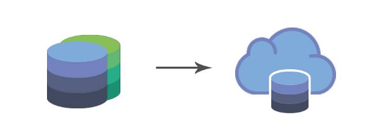

Cloud Database
A database service that runs on a cloud and is accessible from anywhere is a cloud database. It is a computing platform that provides functionality of traditional database with cloud computing. The cloud computing infrastructure platform can be private, public, or hybrid.
There are two methods to run a cloud database:
Virtual machine image
In this method cloud platforms allows user to either purchase a virtual machine and then run the database on it or to use ready-made machine that already have an image of the system installed. This method is as good as owning a physical machine and is expensive. It is also called the traditional database environment model.
Database-as-a-service (DBaaS)
In this model, application owners use the service provided by the cloud platforms and do not need to install and maintain the database themselves. The database service provider does everything from installing to maintaining the database and the users are charged accordingly.
How does a cloud database work?
The only difference between the cloud database and the traditional database is where they reside. A physical database is connected through LAN whereas a cloud database is connected through the internet to the servers and is accessed through SQL or NoSQL queries.
Advantages of cloud databases:
- Elimination of physical infrastructure
- Scalability
- Cost effectiveness
- Latest technology availability.
- Performance guarantees.
- Specialized expertise: Companies get specialized assistance for the database systems that they use.
- Latest technology.
- Failover support
- Declined pricing.
Types of cloud databases :
SQL databases
- Vertically scalable
- Can run in a virtual machine or a service model.
SQL databases have developed NoSQL capabilities, for e.g.JSON, binary JSON.
NoSQL databases
- Efficient horizontal scalability
- High performance.
- Easily assembled into cloud applications.
- Can scale up and down easily
- Built to serve heavy read/write loads
- Suited to run in the cloud
To work with NoSQL database the application code is rewritten as they are traditionally built around SQL models.
Transferring databases to the cloud

Database can be transferred to a cloud implementation.Reasons for transferring include:
- Elimination of physical server and storage infrastructure.
- It is an effective way to enable business performance.
- No more requirement of highly qualified technical people to manage the database.
- Improves processing efficiency.
- Ease of accessing database in large companies.
- Achieves cost savings through:
Reduction of highly qualified technical staff to manage the database
The cloud service pricing cost is declining day-by-day
Paying only for the utilized resources.
Problems
- Getting It Right in the first attempt is a huge challenge.
- People are not willing to change and adapt. The adaptation takes time in bigger companies rather than in younger companies as bigger enterprises have to undergo a huge transition.
- Lack of strategy and business objectives.
- The psychological barrier of not migrating the data to cloud due to security reasons.
- Time and security barriers.
- Inadequate planning of what data should and should not be on the cloud.
- The management needs to be changed as the requirements change.
- Lack of dependable technological infrastructure because buying is easier than implementing.
- Re-building the database from scratch or not changing it at all. It is not beneficial if re-writing exceeds the budget.
- Companies lack to translate their security needs to the service provider.
- Companies lack to understand that fast access of data requires large payment. Hence, they should plan accordingly.
- Some systems are so traditional that they are not cloud ready.
To overcome these issue companies should follow a strategic approach:
- Find an established vendor with a good track record as they have higher security standards, a better range of services and resources available, and a better quality support and training available.
- Decide what applications need cloud migration because not all applications are “cloud compatible”.
- What to migrate?:Decide what applications need cloud migration because not all applications are “cloud compatible”. Moreover, if the current system is cheaper than the cloud option, then there is no need to move.
- What not to migrate?
- Determining the risk: The risk should be calculated.
- Migrating appropriate items: Data should be appropriately categorized to be moved to a public or private cloud.
- Service level guarantee: Sometimes the cloud vendor fails to provide the promised deals. Once the vendor’s service guarantees, the next thing is to check the vendor backup plans.
- Check with the lawyers: Data protection or other acts of law may prevent the placement of data in certain locations
Famous Databases
- Amazon Web Services
- MongoDB
- Apache Cassandra
- Amazon DynamoDB
- Couchbase
- DataStax NoSQL
- Oracle NoSQL
- Microsoft Azure SQL Database
- Microsoft Azure DocumentDB
- Cloud SQL by Google
- MarkLogic
- Apache HBase
- Redis
- MapR-DB
- ArangoDB
Types of NoSQL databases
There are 4 basic types of NoSQL databases:
- Key-Value Store: In this model Big Hash Table of keys & values are made. This model does not provide any traditional database functionalities. Moreover, as the data volume increases the unique key becomes hard to maintain.
- Document-based Store: In this model documents made up of tagged elements are stored. It is used in transferring data in web applications and softwares where speed of deployment is important. These databases store information in the form of instances that makes mapping simpler.
- Column-based Store: In this model each storage block made, contains data from only one column and are generally used to decrease the seek-time in hard-disks. This type of database boosts performance by reducing the amount of data to be read.
- Graph-based: In this model a network database is made that uses edges and nodes to represent and store data. It is best suited for many-to-many relationships, Low latency at large scale, High value of relationships. For e.g. Social networks, Customer 360, including entity resolution (correlating user data from multiple sources), Fraud detection, Asset management.